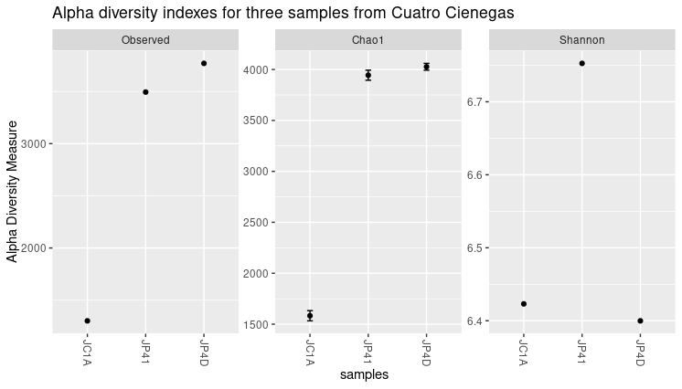
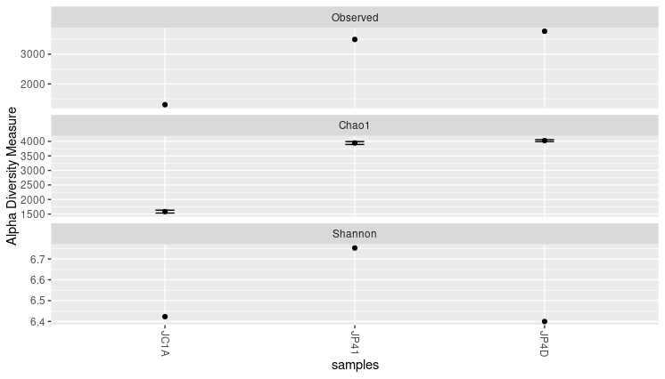
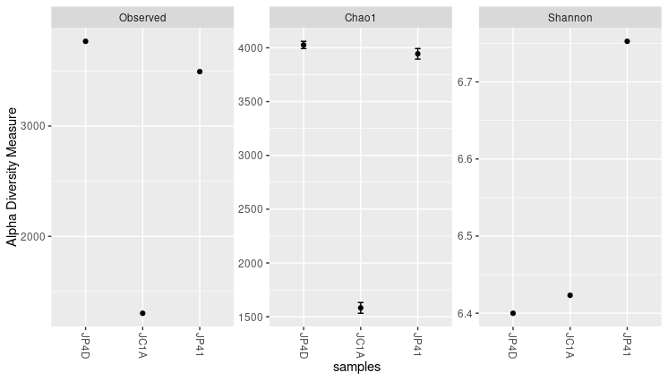

Diversity Tackled With R
Last updated on 2025-04-06 | Edit this page
Estimated time: 50 minutes
Overview
Questions
- How can we measure diversity?
- How can I use R to analyze diversity?
Objectives
- Plot alpha and beta diversity.
Look at your fingers; controlled by the mind can do great things. However, imagine if each one has a little brain of its own, with different ideas, desires, and fears ¡How wonderful things will be made out of an artist with such hands! -Ode to multidisciplinarity
First plunge into diversity
Species diversity, in its simplest definition, is the number of species in a particular area and their relative abundance (evenness). Once we know the taxonomic composition of our metagenomes, we can do diversity analyses. Here we will discuss the two most used diversity metrics, α diversity (within one metagenome) and β (across metagenomes).
- α Diversity: Can be represented only as richness (, i.e., the number of different species in an environment), or it can be measured considering the abundance of the species in the environment as well (i.e., the number of individuals of each species inside the environment). To measure α-diversity, we use indexes such as Shannon’s, Simpson’s, Chao1, etc.

Figure 1. Alpha diversity is calculated according to fish diversity in a pond. Here, alpha diversity is represented in its simplest way: Richness.
- β diversity is the difference (measured as distance) between two or more environments. It can be measured with metrics like Bray-Curtis dissimilarity, Jaccard distance, or UniFrac distance, to name a few. Each one of this measures are focused on a characteristic of the community (e.g., Unifrac distance measures the phylogenetic relationship between the species of the community).
In the next example, we will look at the α and the β components of the diversity of a dataset of fishes in three lakes. The most simple way to calculate the β-diversity is to calculate the distinct species between two lakes (sites). Let us take as an example the diversity between Lake A and Lake B. The number of species in Lake A is 3. To this quantity, we will subtract the number of these species that are shared with the Lake B: 2. So the number of unique species in Lake A compared to Lake B is (3-2) = 1. To this number, we will sum the result of the same operations but now take Lake B as our reference site. In the end, the β diversity between Lake A and Lake B is (3-2) + (3-2) = 2. This process can be repeated, taking each pair of lakes as the focused sites.

Figure 2. Alpha and beta diversity indexes of fishes in a pond.
If you want to read more about diversity, we recommend to you this paper on the concept of diversity.
α diversity
|——————-+—————————————————————————————————————–|
| Diversity Indices | Description |
|——————-+—————————————————————————————————————–|
| Shannon (H) | Estimation of species richness and species evenness.
More weight on richness. |
|——————-+—————————————————————————————————————–|
| Simpson’s (D) |Estimation of species richness and species evenness.
More weigth on evenness. |
|——————-+—————————————————————————————————————–|
| Chao1 | Abundance based on species represented by a single individual
(singletons) and two individuals (doubletons). |
|——————-+—————————————————————————————————————–|
- Shannon (H):
| Variable | Definition |
|---|---|
| $ H = - \sum_{i=1}^{S} p_{i} \ln{p_{i}} $ | Definition |
| $ S $ | Number of OTUs |
| $ p_{i} $ | The proportion of the community represented by OTU i |
- Simpson’s (D)
| Variable | Definition |
|---|---|
| $ D = \frac{1}{\sum_{i=1}^{S} p_{i}^{2}} $ | Definition |
| $ S $ | Total number of the species in the community |
| $ p_{i} $ | Proportion of community represented by OTU i |
- Chao1
| Variable | Definition |
|---|---|
| $ S_{chao1} = S_{Obs} + \frac{F_{1} \times (F_{1} - 1)}{2 \times (F_{2} + 1)} $ | Count of singletons and doubletons respectively |
| $ F_{1}, F_{2} $ | Count of singletons and doubletons respectively |
| $ S_{chao1}=S_{Obs} $ | The number of observed species |
β diversity
Diversity β measures how different two or more communities are, either in their composition (richness) or in the abundance of the organisms that compose it (abundance).
- Bray-Curtis dissimilarity: The difference in richness and abundance across environments (samples). Weight on abundance. Measures the differences from 0 (equal communities) to 1 (different communities)
- Jaccard distance: Based on the presence/absence of species (diversity). It goes from 0 (same species in the community) to 1 (no species in common)
- UniFrac: Measures the phylogenetic distance; how alike the trees in each community are. There are two types, without weights (diversity) and with weights (diversity and abundance)
There are different ways to plot and show the results of such analysis. Among others, PCA, PCoA, or NMDS analysis are widely used.
Exercise 1: Simple measure of alpha and beta diversities.
In the next picture, there are two lakes with different fish species:
 Figure 3.
Figure 3.
Which of the options below is true for the alpha diversity in lakes A, B, and beta diversity between lakes A and B, respectively?
- 4, 3, 1
- 4, 3, 5
- 9, 7, 16
Please, paste your result on the collaborative document provided by instructors. Hic Sunt Leones! (Here be Lions!)
Answer: 2. 4, 3, 5 Alpha diversity in this case, is the sum of different species. Lake A has 4 different species and lake B has 3 different species. Beta diversity refers to the difference between lake A and lake B. If we use the formula in Figure 2 we can see that to calculate beta diversity, we have to detect the number of species and the number of shared species in both lakes. There is only one shared species, so we have to subtract the number of shared species to the total species and sum the result. In this case, in lake A, we have 4 different species and one shared species with lake B (4-1)=3, and in lake B we have three species and one shared species with lake A (3-1)=2. If we add 3+2, the result is 5.
Plot alpha diversity
We want to know the bacterial diversity, so we will prune all
non-bacterial organisms in our merged_metagenomes Phyloseq
object. To do this, we will make a subset of all bacterial groups and
save them.
Now let us look at some statistics of our metagenomes. By the output
of the sample_sums() command, we can see how many reads
there are in the library. Library JC1A is the smallest with 18412 reads,
while library JP4D is the largest with 149590 reads.
OUTPUT
phyloseq-class experiment-level object
otu_table() OTU Table: [ 4024 taxa and 3 samples ]
tax_table() Taxonomy Table: [ 4024 taxa by 7 taxonomic ranks ]OUTPUT
JC1A JP4D JP41
18412 149590 76589 Also, the Max, Min, and Mean output on summary() can
give us a sense of the evenness. For example, the OTU that occurs more
times in the sample JC1A occurs 399 times, and on average in sample
JP4D, an OTU occurs in 37.17 reads.
OUTPUT
JC1A JP4D JP41
Min. : 0.000 Min. : 0.00 Min. : 0.00
1st Qu.: 0.000 1st Qu.: 3.00 1st Qu.: 1.00
Median : 0.000 Median : 7.00 Median : 5.00
Mean : 4.575 Mean : 37.17 Mean : 19.03
3rd Qu.: 2.000 3rd Qu.: 21.00 3rd Qu.: 14.00
Max. :399.000 Max. :6551.00 Max. :1994.00 To have a more visual representation of the diversity inside the samples (i.e., α diversity), we can now look at a graph created using Phyloseq:
{kind=link}

Figure 4. Alpha diversity indexes for both samples.
Each of these metrics can give an insight into the distribution of the OTUs inside our samples. For example, the Chao1 diversity index gives more weight to singletons and doubletons observed in our samples, while Shannon is an entropy index remarking the impossibility of taking two reads out of the metagenome “bag” and that these two will belong to the same OTU.
Exercise 2: Exploring function flags.
While using the help provided, explore these options available for
the function in plot_richness():
nrowsortbytitle
Use these options to generate new figures that show you other ways to present the data.
The code and the plot using the three options will look as follows: The “title” option adds a title to the figure.
R
> plot_richness(physeq = merged_metagenomes,
title = "Alpha diversity indexes for three samples from Cuatro Cienegas",
measures = c("Observed","Chao1","Shannon")) Figure 5. Alpha diversity plot with the title.
{kind=link}
The “nrow” option arranges the graphics horizontally.
 Figure 6. Alpha diversity plot with the three panels arranged in rows.
{kind=link}
The “sortby” option orders the samples from least to greatest diversity depending on the parameter. In this case, it is ordered by “Shannon” and tells us that the JP4D sample has the lowest diversity and the JP41 sample the highest.
R
> plot_richness(physeq = merged_metagenomes,
measures = c("Observed","Chao1","Shannon"),
sortby = "Shannon")  Figure 7. Samples sorted by Shannon in alpha diversity index plots.
{kind=link}
Considering those mentioned above, together with the three graphs, we can say that JP41 and JP4D present a high diversity concerning the JC1A. Moreover, the diversity of the sample JP41 is mainly given by singletons or doubletons. Instead, the diversity of JP4D is given by species in much greater abundance. Although the values of H (Shannon) above three are considered to have a lot of diversity.
A caution when comparing samples is that differences in some alpha indexes may be the consequence of the difference in the total number of reads of the samples. A sample with more reads is more likely to have more different OTUs, so some normalization is needed. Here we will work with relative abundances, but other approaches could help reduce this bias.
Absolute and relative abundances
From the read counts that we just saw, it is evident that there is a great difference in the number of total sequenced reads in each sample. Before we further process our data, look if we have any non-identified reads. Marked as blank (i.e.,““) on the different taxonomic levels:
OUTPUT
Kingdom Phylum Class Order Family Genus Species
Mode :logical Mode :logical Mode :logical Mode :logical Mode :logical Mode :logical Mode :logical
FALSE:4024 FALSE:4024 FALSE:3886 FALSE:4015 FALSE:3967 FALSE:3866 FALSE:3540
TRUE :138 TRUE :9 TRUE :57 TRUE :158 TRUE :484 With the command above, we can see blanks on different taxonomic levels. For example, we have 158 blanks at the genus level. Although we could expect to see some blanks at the species or even at the genus level; we will get rid of the ones at the genus level to proceed with the analysis:
R
> merged_metagenomes <- subset_taxa(merged_metagenomes, Genus != "") #Only genus that are no blank
> summary(merged_metagenomes@tax_table@.Data== "")OUTPUT
Kingdom Phylum Class Order Family Genus Species
Mode :logical Mode :logical Mode :logical Mode :logical Mode :logical Mode :logical Mode :logical
FALSE:3866 FALSE:3866 FALSE:3739 FALSE:3860 FALSE:3858 FALSE:3866 FALSE:3527
TRUE :127 TRUE :6 TRUE :8 TRUE :339 Next, since our metagenomes have different sizes, it is imperative to convert the number of assigned reads (i.e., absolute abundance) into percentages (i.e., relative abundances) to compare them.
Right now, our OTU table looks like this:
OUTPUT
JC1A JP4D JP41
1060 32 420 84
1063 316 5733 1212
2033869 135 1232 146
1850250 114 846 538
1061 42 1004 355
265 42 975 205To make this transformation to percentages, we will take advantage of a function of Phyloseq.
R
> percentages <- transform_sample_counts(merged_metagenomes, function(x) x*100 / sum(x) )
> head(percentages@otu_table@.Data)OUTPUT
JC1A JP4D JP41
1060 0.1877383 0.3065134 0.1179709
1063 1.8539161 4.1839080 1.7021516
2033869 0.7920211 0.8991060 0.2050447
1850250 0.6688178 0.6174056 0.7555755
1061 0.2464066 0.7327130 0.4985675
265 0.2464066 0.7115490 0.2879052Now, we are ready to compare the abundaces given by percantages of the samples with beta diversity indexes.
Beta diversity
As we mentioned before, the beta diversity is a measure of how alike or different our samples are (overlap between discretely defined sets of species or operational taxonomic units). To measure this, we need to calculate an index that suits the objectives of our research. By the next code, we can display all the possible distance metrics that Phyloseq can use:
OUTPUT
$UniFrac
[1] "unifrac" "wunifrac"
$DPCoA
[1] "dpcoa"
$JSD
[1] "jsd"
$vegdist
[1] "manhattan" "euclidean" "canberra" "bray" "kulczynski" "jaccard" "gower"
[8] "altGower" "morisita" "horn" "mountford" "raup" "binomial" "chao"
[15] "cao"
$betadiver
[1] "w" "-1" "c" "wb" "r" "I" "e" "t" "me" "j" "sor" "m" "-2" "co" "cc" "g"
[17] "-3" "l" "19" "hk" "rlb" "sim" "gl" "z"
$dist
[1] "maximum" "binary" "minkowski"
$designdist
[1] "ANY"Describing all these possible distance metrics is beyond the scope of this lesson, but here we show which are the ones that need a phylogenetic relationship between the species-OTUs present in our samples:
- Unifrac
- Weight-Unifrac
- DPCoA
We do not have a phylogenetic tree or phylogenetic relationships. So we can not use any of those three. We will use Bray-curtis since it is one of the most robust and widely used distance metrics to calculate beta diversity.
Let’s keep this up! We already have all we need to
begin the beta diversity analysis. We will use the Phyloseq command
ordinate to generate a new object where the distances
between our samples will be allocated after calculating them. For this
command, we need to specify which method we will use to generate a
matrix. In this example, we will use Non-Metric Multidimensional Scaling
or NMDS.
NMDS attempts to represent the pairwise dissimilarity between objects in
a low-dimensional space, in this case, a two-dimensional plot.
If you get some warning messages after running this script, fear not. It is because we only have three samples. Few samples make the algorithm warn about the lack of difficulty in generating the distance matrix.
By now, we just need the command plot_ordination() to
see the results from our beta diversity analysis:
 Figure 8. Beta diversity with NMDS of our three samples.
Figure 8. Beta diversity with NMDS of our three samples.
In this NMDS plot, each point represents the combined abundance of all its OTUs. As depicted, each sample occupies space in the plot without forming any clusters. This output is because each sample is different enough to be considered its own point in the NMDS space.
Exercise 3: Add metadata to beta diversity visualization
In the following figure, the beta diversity graph we produced earlier has been enriched. Look at the code below and answer:
- Which instruction colored the samples by their corresponding treatment?
- What did the instruction
geom_textdo? - What other difference do you notice with our previous graph?
- Do you see some clustering of the samples according to their treatment?
 ~~~ metadata_cuatroc <- data.frame(Sample=c(“JC1A”, “JP4D”, “JP41”),
Treatment=c(“Control mesocosm”, “Fertilized pond”, “Unenriched pond”)) #
Making dataframe with metadata
~~~ metadata_cuatroc <- data.frame(Sample=c(“JC1A”, “JP4D”, “JP41”),
Treatment=c(“Control mesocosm”, “Fertilized pond”, “Unenriched pond”)) #
Making dataframe with metadata
rownames(metadata_cuatroc) <- metadata_cuatroc$Sample # Using sample
names as row names
percentages@sam_data
<- sample_data(metadata_cuatroc) # Adding metadata to sam_data table
of phyloseq object percentages
meta_ord <- ordinate(physeq = percentages, method = “NMDS”, distance
= “bray”) # Calculating beta diversity
plot_ordination(physeq = percentages, ordination = meta_ord, color =
“Treatment”) + # Plotting beta diversity.
geom_text(mapping = aes(label = Sample), size = 3, vjust = 1.5)
~~~ {: .language-r} > ## Solution > The flag
color = "Treatment" applied a color to each sample
according to its treatment, in the plot_ordination of the
object percentages.
> The geom_text instruction added the names of the
sample to the graph. This could have added any text, with the
instruction label = Sample we specified to add the names of
the samples as text. With size we adjusted the size of the
text, and with vjust we adjusted the position >so the
text would not overlap with the dots.
> There are three possible treatments, Control mesocosm, Fertilized,
and Unfertilized pond.
> We do not observe any kind of clustering in these three samples.
More data would show if samples with similar treatments are clustered
together.
{: .solution}
Discussion: Indexes of diversity
Why do you think we need different indexes to asses diversity? What index will you use to assess the impact of rare, low-abundance taxa?
It will be difficult (if not impossible) to take two communities and observe the same distribution of all members. This outcome is because there are a lot of factors affecting these lineages. Some of the environmental factors are temperature, pH, and nutrient concentration. Also, the interactions of these populations, such as competence, inhibition of other populations, and growth speed, are an important driver of variation (biotic factor). A combination of the factors mentioned above, can interact to maintain some populations with low abundance (rare taxa In order to have ways to assess hypotheses regarding which of these processes can be affecting the community, we use all these different indexes. Some emphasize the number of species and other the evenness of the OTUs. To assess the impact of low abundance lineages, one alpha diversity index widely used is the Chao1 index.
Key Points
- Alpha diversity measures the intra-sample diversity.
- Beta diversity measures the inter-sample diversity.
- Phyloseq includes diversity analyses such as alpha and beta diversity calculation.